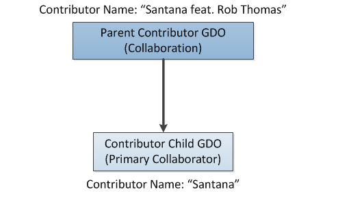

Some songs are collaborations between two or more artists. For example, the Santana album “Supernatural” contains a number of collaborations, including:
You might want to take different actions in your application, depending on whether a song is by a single artist or a collaboration. The following topic shows how to navigate collaborations, and how to determine whether text-based lookup results contain collaborative artists. For information about best practices for working with collaborations, see Collaborative Artists Best Practices.
In GNSDK for Desktop, artists are represented by contributor GDOs. A contributor GDOGracenote Data Object: Containers most-commonly used to store information returned by a query. GDOs can contain metadata values (names, titles, external IDs, and so on) that can be accessed by an application using Value keys. GDOs can also contain references to other GDOs, which can be accessed using Child GDO keys. can represent a single artist or a collaboration. To determine whether a contributor GDO represents a collaboration, check to see if it has a contributor child. If it does, the GDO represents a collaboration and the contributor child is the primary collaborator.
The following example checks to see whether the contributor GDO has a contributor child, and if so, it retrieves the primary collaborator GDOs:
error = gnsdk_manager_gdo_child_count(contributor_gdo,
GNSDK_GDO_CHILD_CONTRIBUTOR,&collab_count);
/* The number of collaborators will either be 0 or 1 depending on
* whether or not this contributor is a collaboration.
*/
if (collab_count == 1)
{
/* This contributor is a collaboration
* Retrieve the primary collaborator
*/
error = gnsdk_manager_gdo_child_get(contributor_gdo,
GNSDK_GDO_CHILD_CONTRIBUTOR, collab_count, &collaborator_gdo);
if (!error)
{
/* Navigate the collaborator GDO */
…
}
}
In addition, the parent contributor GDO contains the collaboration name. As an example, if you have a contributor GDO that represents the collaboration “Santana featuring Rob Thomas,” it would have a contributor child GDO. The child GDO has the primary collaborator name “Santana,” and the parent GDO has the collaborator name “Santana featuring Rob Thomas.”

When you perform a text-based lookup using gnsdk_musicid_query_find_matches(), one of the possible results is a contributor GDO. This section discusses how to determine whether these contributor lookup results contain collaborative artists.
If your input artist string represents a collaboration, but that collaboration is not found, GNSDK for Desktop attempts to find the primary collaborator instead. If it is able to find the primary collaborator, it returns results for that collaborator, and the GNSDK_GDO_VALUE_COLLABORATOR_RESULT key is set to TRUE. This indicates that your input is a collaboration, but you only matched the primary collaborator. This allows you to distinguish this case from a situation in which the input was a single artist, and a single artist was identified.
For the purposes of this discussion, assume that you’ve done a text-based lookup that included an artist name as input, and you have gotten a contributor GDO back. The input text might be a single artist, such as “Santana,” or it might be a collaboration, such as “Santana featuring Rob Thomas.”
To determine whether the lookup results contain collaborative artists, use the following general steps:
The following sections show the results for different inputs and provide more information about how to use the results in your application.
The following table shows a case where the input string matches a collaboration in the database.
| Example Input Text | “Santana featuring Rob Thomas” |
| GDO Results | A contributor GDO that has a child contributor GDO; the parent GDO has the collaboration name “Santana featuring Rob Thomas,” and the child GDO has the primary collaborator name “Santana." |
The following table shows a case where the input string does not match a collaboration in the database, but the input string is identified as a collaboration. In this case, the lookup returns the primary collaborator, and the GNSDK_GDO_VALUE_COLLABORATOR_RESULT flag is set to TRUE, which indicates that the input is a collaboration, but the lookup only returned the primary collaborator.
| Example Input Text | “Santana featuring Unknown Artist” |
| GDO Results | One contributor GDO with artist name “Santana” |
| GNSDK_GDO_VALUE_COLLABORATOR_RESULT Value | TRUE |
Note: If this track is being played, Gracenote recommends that you display the original input text in your interface, but use the returned collaborator to generate playlists for the input track.
The following table shows a case where the input string is not a collaboration, and a single artist match is found.
| Example Input Text | “Santana” |
| GDO Results | One contributor GDO with artist name “Santana” |
| GNSDK_GDO_VALUE_COLLABORATOR_RESULT Value | FALSE |
For more information, see Identifying Music Using Text.
Related Information